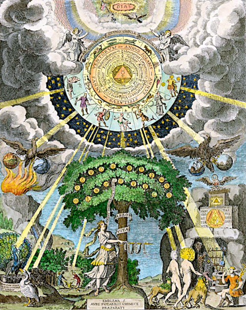

Hermetic Cosmology c.16th century
 Heraclitus (c.535–c.475 BC)
Heraclitus (c.535–c.475 BC)
The noun "Logos" is as old as the Greek language itself. It has acquired, over the course of time, a large number of different meanings, which only with difficulty can be
drawn into a simple unity.
(Encyclopedia of Religion, 2nd ed., 2005, p.5500).
We must suppose, if the Ionian philosophers identified Word with Cosmic Reason and first principle, that they were induced and influenced by some well-known semi-philosophical use of the term "Word of the gods" as the personification of divine agency.
(S. Langdon, "The Babylonian Conception of the Logos").
Logos was a common term in the Greek language of the late sixth century BCE and is derived from légō (λέγω, "say", "speak") and has the basic meanings of "word" (spoken or written) or "utterance."
(Jack Lawson, "Mesopotamian Precursors to the Stoic Concept of Logos").
(Encyclopedia of Religion, 2nd ed., 2005, p.5500).
We must suppose, if the Ionian philosophers identified Word with Cosmic Reason and first principle, that they were induced and influenced by some well-known semi-philosophical use of the term "Word of the gods" as the personification of divine agency.
(S. Langdon, "The Babylonian Conception of the Logos").
Logos was a common term in the Greek language of the late sixth century BCE and is derived from légō (λέγω, "say", "speak") and has the basic meanings of "word" (spoken or written) or "utterance."
(Jack Lawson, "Mesopotamian Precursors to the Stoic Concept of Logos").
Fundamental Cosmology of Hermetical Astrology
For historians, Hermetism is comprised of two main streams of thought, philosophical and technical. Since this section is dealing with concepts which would necessarily be part of the philosophical, this is indeed where they are to be found.Sources include the seventeen texts forming the so-called Corpus Hermeticum rediscovered in the Renaissance, the Poimander so popular throughout medieval times and the Kybalion from the 20th century. There are also many references and extracts to be found in the writings of the great thinkers of the past, such as the Stoics, Neoplatonists, Gnostics and Scholastics. So, we should start at the beginning.
Yet, before we do, there are some technical terms which should be clarified so as to make sense of them within the Hermetic context.
Logos and Cosmos
Two of the most important terms in Hermetism are "Logos" and "Cosmos". The earliest record of these two words being employed as technical terms was with Heraclitus of Ephesus (c.535–c.475 BC) who was very likely a contemporary of the writer(s) of the first Hermetic texts. For Heraclitus, Logos was in flux, in the same way as was meant by the earliest Hermetic texts.The Sophists were quick to pick up on the term Logos, and attributed the meaning of "discourse" to it. This was very likely because they were wandering philosophers readily giving speeches on any subject in return for money. Aristotle (c.384 c.322 BC) expanded the meaning into "reasoned discourse", alongside pathos and ethos, as the three parts of rhetoric.
At the end of the 5th century BC, the Stoics took another path referring to the "logos spermatikos" as the generative principle of the universe. Philo (c. 20 BC – c.50 AD) integrated the term into Jewish philosophy. From there, the Christian and hence modern usage, meaning "Word" or "Discourse", were settled upon for the word Logos.
As a divine, universal governing principle of order and knowledge, Logos combines everything into an orderly structure, for which Heraclitus termed "Cosmos", a word which already meant "pattern", "adornment" and "order".
For Heraclitus, there were two distinct versions of Cosmos. The "idios kosmos" (Greek: ίδιος κόσμος) is a person's "own world" or "private world" as distinguished from the "common world" or "common cosmos" (koinos kosmos). The origin of the term is attributed to fragment B89 (Diels–Kranz numbering) of the Pre-Socratic philosopher Heraclitus: "The waking have one common world, but the sleeping turn aside each into a world of his own." The term has various interpretations: idios kosmos is associated with dreaming, imagination, and delusion; koinos kosmos with wakefulness, reason, and consensus reality. (wikipedia)
Much, if not all of the ideas from Heraclitus are in tune with Hermetism. This is not surprising, for as Heraclitus himself says that he uses his Personal Logos to speak the truths of the true, Divine Logos. Although it was possibly the fashion at the time, Heraclitus did not take the word "Logos" to mean "discourse" (see T.M.Robinson, Heraclitus, Fragments, p.74-75). Instead, he more likely meant "true explanation" or "true statement" as "divine law". Heraclitus often used the terms "koinos logos" meaning "Common Logos" and "eidos logos" for "Personal Logos" (modern: "Soul's Logos").
 Heraclitus of Ephesus,
Heraclitus of Ephesus,a thinker ahead of his time
- The logos is common to all (fragment 2)
- Unless you expect the unexpected you will never find truth, for it is hard to discover and hard to attain.(fragment 18)
- What even the most respected man knows and defends are imaginings/opinions. (fragment 28A)
- Uncomprehending, even when they have heard the truth about things, they are like deaf people. The saying 'absent while present' fits them well. (fragment 34)
-
For those who are awake there is a single, common universe,
where as in sleep each person turns away into an own, private universe. (fragment 89) - Thinking is common to all. (fragment 113)
- Soul possesses a logos which increases itself. (fragment 115)
Heraclitus held that the recurrent fire is everlasting, and that destiny is a logos which fashions existent things through the contrariety of the directions in which they tend to run. He tried to show that that logos which pervades (the) essence of the universe is (the) essence of destiny. Heraclitus says, then, that this 'common' and divine logos - by participation in which we become rational - is the yardstick of truth. So that which appears (such and such) to all in common is trustworthy (for it is grasped by the 'common' and divine logos), but that which strikes only an individual as (such-and-such) is - for the opposite reason - untrustworthy.
For having in these words expressly stated the view that we do and apprehend everything thanks to our participation in the divine logos, he goes on a little further, then adds: That is why it is necessary to follow that which is (common). Though the account (logos) is common, however, the many live as though they had a private understanding' (fragment 2). This logos is nothing else than an explanation (exposition, articulation, exegesis) of the mode of arrangement of the universe. That is why we speak truly whenever and in so far as we share in the recollection of it (i.e. of the logos) but are invariably mistaken on matters of private opinion.
So here and in these words he states clearly that the common logos is the yardstick (of truth); the things that appear such and such in common are trustworthy, as being judged by the common logos, whereas those that appear (such and such) to each person privately are false.
Hyle, Chaos and Logos
From J. E. Cirlot, Dictionary of Symbols:
Hyle is proto-matter, a symbol of the passive, feminine, primordial principle. According to Nicomachus of Gerasa, the pristine state of chaos of the hyle was fecundated by Number. Hildegard of Bingen (1098-1179), the abbess, in her illustrated manuscript, Scivias, describes cosmogonic visions in which Nous blends and harmonizes with the monster chaos.
Logos is the light and the life, at once spiritual and material, which combats both death and night. It is the antithesis of disorder and chaos, of evil and darkness. It is also cognate with the word and with thought.
Logos is the light and the life, at once spiritual and material, which combats both death and night. It is the antithesis of disorder and chaos, of evil and darkness. It is also cognate with the word and with thought.
The Soul as Pneuma and Psyche
The ancient Greek word for soul was pneuma, meaning breath, as a life sustainer. In the modern world, the word psyche (ancient Greek: ψυχή), literally meaning "life", is used to refer to the spiritual human soul. This was adopted by Christian philosophers from Aristotle's philosophy. The modern usage of psyche also refers to the animating part of the human body, the meaning of which is the foundation of psychology, which describes psyche as "the totality of the human mind, conscious and unconscious". This version of psyche is held responsible for the enlivening of the body in a physical sense. In Latin this is called the "anima", which in ancient Greek was more often referred to as "bios", which also meant life and not psyche.This all comes about from a treatise about the psyche written by Aristotle, entitled "Peri Psyches" in Greek, "De Anima" in Latin, and "On The Soul" in English. But Aristotle also claimed there were three nested souls, the nutritive (as also in plants), sensitive (as also in animals) and logos (rational and only in humans). Of course, it is difficult to ascertain what makes a body alive. Whether it be a physical, natural, enlivening force called life, or a non-physical, spiritual, wilful and mindful action of the mind. The latter is taken to be the case in Hermetism, both for the Divine Soul and the Personal Soul.
In Plato's Republic, Book IV, soul is divided into three parts:
- nous ("intellect", "reason"), which is or should be the controlling part which subjugates the appetites with the help of thumos
- thumos ("passion", "spirit"), the emotional element in virtue of which we feel joy, amusement, etc.
- epithumia ("appetite", "affection"), to which are ascribed bodily desires
But a century earlier, Heraclitus said:
- Soul [psyche] possesses a logos which increases itself.
(Like nous, logos is also "intellect" and "reason".)
Nous, The Intellect of the Soul
Another major term used in Hermetism is that of "nous" (Greek: νοῦς). This word generally means "mind", "intelligence", "intellect", "spirit", "understanding", "awareness" and "good sense".Heraclitus complained that "much learning does not teach understanding (nous)". The Hermetic Nous as the "Divine Mind" was ultimately responsible for bringing about the entire Cosmos, having called forth the "Divine Logos" which set the ball rolling.
The Personal Nous, is at birth only having the potential for development, and through experience has the chance to increase personal intelligence, which in turn relies on the Divine Nous to grow. This relationship remains, and in turn provides a connection to the Personal Logos which can access the Divine Logos. In Hermetism, the Personal Nous is not in any way bound up with matter, being completely immaterial.
The Greek philosopher, Parmenides (c. late 6th C.- c. 5th C. BCE) held that sense-perception doesn't lead to truth, but only opinion. For him, it was only the personal nous which was able to tell what was true by having the ability to perceive it directly, in the same way as Daimons are able to do.
Plato considered nous to be the only immortal part of the human soul. In the Republic, Plato has Socrates explain to Glaucon "the analogy of the divided line" whereby he describes a division into two segments each of which are also divided into two. The four resulting segments then represent four separate "affections" (pathēmata, Greek: παθήματα, sufferings) of the psyche. The lower two divisions relate to the visible while the upper two correspond to the intelligible. These four affections equate to increasing levels of reality and truth, starting with conjecture (eikasía, εἰκασία, a guess), then belief (peîsis, πίστις, faith), onto thought (dianoia, διάνοια, cognition) and finally understanding (nôsis, νόησις, intelligence).
Andre-Jean Festugiere (15.03.1898-13.08.1982), the historian, philologist and priest, who also translated the Corpus Hermeticum, said about Logos and Nous:
Reason (Logos) itself, although it is by definition what distinguishes us from the irrational beasts (alogoi), is held by certain Hermetic treatises to be still too much bound up with the material body to be an emanation from above. We have therefore within us only one truly divine element, the nous, in its twofold function of intellective faculty and mystical faculty.
Bertrand Russell (1872-1970) said in A History of Western Philosophy about the usage of 'nous' in Neoplatonism:
It is always difficult to find an English word to represent nous. The standard dictionary translation is “mind,” but this does not have the correct connotations, particularly when the word is used in a religious philosophy.
Heart and Sun
The Stoics claimed that the senses were ruled by what they called the hegemonikon which they took to be the human heart or residing in it, as the ruler of all emotions and thoughts, as well as the seat of the soul. One of the Stoics, Cleanthes c.330–230 BCE), went further and located the hegemonikon of the Cosmos in the Sun (see under sympátheia in F. E. Peters, Greek Philosophical Terms, p186). In astrology, the Sun is the ruler of the heart. In the melothesia of astrological medicine there is a correspondence between the human heart and the Sun in an astrological chart.This symbolism comes about from consideration of what is central to (at the heart of) both the Cosmos as macrocosm, and the human as microcosm.
Heart and Nous
The heart is the locus of physical and spiritual being, and represents the "central wisdom of feeling as opposed to the head-wisdom of reason" (Cooper, 82). It is compassion and understanding, life-giving and complex. It is a symbol for love. Often known as the seat of emotions, the heart is synonymous with affection. In Egypt, represented life-essence, as the mummified had their heart preserved, first part of man to live, last to die. Hearts also carry senses of intellect and understanding, as well as connotations of the soul, along with come will and courage. Is the central point (with the brain and sexual organs being the endpoints) of the vertical scheme of the human.(from Dictionary of Symbolism, Allison Protas, Geoff Brown, Jamie Smith, Eric Jaffe)
Babua ben Asher, a rabbi of the eighteenth century, commenting on this commandment, said that the heart was the first part of us to be created and will be the last to die, so to love with our whole heart is a promise to go on loving till our last breath.
(frpm The Heart as a Universal Symbol, David Richo)
Heart and Phren
phrḗn (Greek: φρήν) feminine (genitive φρενός); third declension- (often in the plural) The midriff, stomach and lower chest or breast
- The seat of emotions, heart; seat of bodily appetites such as hunger
- The seat of intellect, wits, mind
- will, purpose
In Ancient Greek philosophy, phren (Ancient Greek: φρήν, romanized: phrēn, lit. 'mind'; plural phrenes, φρένες) is the location of thought and contemplation. The kind of mental activity conducted in the Phren involves what 20th and 21 Century Western thinkers consider both feeling and thinking; scholars have remarked that Ancient Greeks located this activity in the torso as opposed to the head.
For example, phren is where Achilles considered his sadness about losing Briseis and his duty to join the Greeks against Troy. Phren, however, is not exclusively applied to humans. In Empedocles' system, phren is a general psychological agent to which moral blame and praise can be extended, that darts through the universe as effluences, steers and controls the cosmos in the process and is the measure of what is harmonious and what is fit to exist. It is said that it is strongest at the region found beyond the universe where strife reigns. (wikipedia)
Words derived from Phren:
- phrensy (Hippocrates. Of the Epidemics)
- phrensies, phrenzy, phrensy (Nicholas Culpeper)
- phrenitis, phrenitic
- phrenology (Dr. Charles W. Roback)
- astro-phrenology, phrenological (Carrington Bolton)
The Soul, The Logos and The Nous
The Greek word for soul is pneuma, meaning breath, which is the life sustaining force in most cosmologies and mythologies. As far as the Hermetic texts are concerned, the word pneuma is mostly used in the Stobaeus fragments supposedly to refer to the soul. The other Hermetic texts concentrate mostly on nous as the eye of the heart capable of seeing reality for the soul. It is completely spiritual and immaterial, unlike the logos which is bound to both spirit and matter.Throughout time, the words Logos and Nous, although still not regarded as being the identical, have been attributed the same meanings, such as light, word, understanding, thought, reason and so on. The only sensible explanation for this phenomenon is the lack of thorough understanding of the meanings of these words on the part of theologians, philosophers, scribes, authors, historical translators and philologists.
Understandably, as Bertrand Russell has pointed out, instead of relating the true meaning, they settled on what they understood, or wanted them to mean, which is basically o opinion. The root of the problem lies in what is regarded as the human soul, as material or spiritual or both, and whether or not it has parts or is only the one thing. By lacking proper definition, the terms used by ancient writers either become synonyms open to a random choice or preference according to 'knowing' what these words mean.
In Hermetic philosophy, Logos and Nous are quite different aspects of the Divine, which become more apparent by learning about the Cosmology of Hermes Trismegistus:
Nous is the image of the One.
Nous is the Eye of the Heart which can see truth.
Nous created the Logos.
Logos is the image of the Nous.
Logos is truth.
Logos was used to create the Cosmos.
Cosmos is the image of the Logos.
Cosmos is the All.
Cosmos was made out of the four elements separated from unformed matter (Hyle).
But there are variations within the ancient philosophies.
(in the entry for eikon (image, reflection) in F. E. Peters, Greek Philosophical Terms, p51).
In Plato:
Eikasia, the state of perceiving mere images and reflections, is the lowest segment of the Platonic Line (Republic. 50ge). The eikon has a qualified type of existence (Timaeus. 52c) and a not very complimentary role in Plato's theory of art (Republic. 598e-599a; see techne, mimesis).
The visible universe is the eikon of the intelligible one that embraces the eide (Tim. 30a---d), and
time is an image of eternity
In Plotinus:
time is an image of eternity
soul is an image of nous (Enn. v, 1, 3),
the created world is an image of its Father (Enn. v, 8, 12), and
matter (hyle) an image of being (on)
the created world is an image of its Father (Enn. v, 8, 12), and
matter (hyle) an image of being (on)
Hermetic Cosmology
In the Beginning...
 The Ancient of Days
The Ancient of Days (William Blake c.1794)
depicting the crafstman,
first son of God, creator of all.
The English writer and artist William Blake said of Hermeticism, “Every age renews its powers from these works”.
The cultures which formed the basis included Babylonian, Sumerian, Akkadian, Egyptian and Anatolian. All of these originally had their own cosmologies, often with commonalities, and were eventually absorbed into the Hermetic Cosmology. It would be safe to say that the new Hermetic thought created its own cosmology to cover the concerns previously addressed by its predecessors. That's not unique. Even the young Johann Wolfgang von Goethe at the onset of Romanticism tried his hand at making up his own Cosmology.
The Hermetic Creation Myth
There are lots of creation myths stemming from the ancient world and naturally, Hermetism comes with its own. What is especially outstanding though, is the form in which the story is presented. All the way through the seventeen texts of the Corpus Hermeticism as well as the Pymander, the Nag Hammadi and others, is a technique employed whereby a mysterious all-knowing figure, usually Hermes himself or Poimandres, appears to an unsuspecting receiver of some great wisdom. Sometimes this person is called Tat, another time Asclepius or King Ammon.The Cosmos and The Logos
First and foremost is the Hermetic story of how the Cosmos was created but it might be best to first mention a few observations about the message of the Hermetic texts. Since God is All and is All Mind without material substance, the one thing God was lacking was to experience anything of substance. A vast and limitless mind thinking of nothing. The myth seems to tell of the urgency of bringing something into being which would gather experiences and provide a means to bring them back to report on life, the cosmos and everything. That means was, and still is, meant to be humanity.This is not automatic and naturally enough not everyone can achieve this aim without much effort and as Madame H. P. Blavatsky put it, in Isis Unveiled, Vol.1 p346:
As the laggards in a race struggle and plod in their first quarter while the victor darts past the goal, so, in the race of immortality, some souls out-speed all the rest and reach the end, while their myriad competitors are toiling under the load of matter, close to the starting point. Some unfortunates fall out entirely, and lose all chance of the prize; some retrace their steps and begin again. This is what the Hindu dreads above all things — transmigration and reincarnation; only on other and inferior planets, never on this one.
The Cosmology and Cosmogony - The Details of Creation
The All (To Pan) was All Mind (Nous) and Light and was All God and contained that which became The Cosmos and Everything within it. The All was limitless, light and sweet. And a darkness began to settle like a coiled snake which turned into Moist Nature which tossed about and wailed with fiery smoke.Then out of The Light came the Holy Word, The Logos, which descended upon Nature. And upwards leapt fire, followed by air out of the earth and water, which were intermingled and too heavy to rise. Yet they were moved to hear by reason of The Spirit-Word-Logos pervading them.
 The Created Elements
The Created Elements Fire, Air, Water and Earth
The Light-Word-Logos is the son of God.
What one hears and sees in oneself is the Lord's-Word-Logos but Mind is Father-God.
And they are a unity
(Note that these are referred to in this work as Personal Logos and Cosmic Logos).
Upon Creation of The Cosmos, The All, The Mind and God, all also came into existence. This was an act of Will within The All to bring about primary matter out of which everything is created. The primary matter in turn divided into the four elements of fire, air, water and earth.
God then ordered the four elements into becoming the seven heavens of the seven planets. Out of the materialising of the four elements, The Logos, The Word, sprang forth into being. Nous then ordered that the planets spin and move in their orbits. They moved within the 8th heaven of the fixed stars and all within the 9th heaven, The Primum Mobile.
The movement of the heavens brought forth creatures without reason or speech. The Earth was then separated from The Water and animals except for man were created. The God then created androgynous mankind, in God's own image, and handed over creation to mankind.
Comment from R. G. Gurgel Pereira (The Hermetic Logos, 2010, p.122):
Note that the process of creation is advanced by the power of speech/logos. As the manifestation of will, speech places sounds into the air which represent ideas. These are carried with the power by will, and the result of this action was creation. However, creation through speech was possible only due to the use of God‘s speech. God‘s logos guided Cosmos‘ Nous (the craftsman‘s mind) during his participation in the creation. Cosmos‘ main attributes were concerned with the handling of all forms of matter.
Note that the process of creation is advanced by the power of speech/logos. As the manifestation of will, speech places sounds into the air which represent ideas. These are carried with the power by will, and the result of this action was creation. However, creation through speech was possible only due to the use of God‘s speech. God‘s logos guided Cosmos‘ Nous (the craftsman‘s mind) during his participation in the creation. Cosmos‘ main attributes were concerned with the handling of all forms of matter.
"[...] the word of god leapt straight up to the pure craftwork of nature and united with the craftsman-mind (for the word was of the same substance). (ὁ τοῦ θεοῦ Λόγος εἰς τὸ καθαρὸν τῆς φύσεως δημιούργημα, καὶ νώθη τῶ δημιουργῶ Νῶ (ὁμοούσιος γὰρ
ἦν)).The weighty elements of nature were left behind, bereft of reason, so as to be mere matter. (καὶ κατελείφθη [τὰ] ἄλογα τὰ κατωφερῆ τῆς φύσεως στοιχεῖα, ὡς εἶναι ὕλην
μόνην)." (CH. I, 10).
The Cosmos, known as the craftsman, or as the first son of God, was also his assistant and helped Him create the physical world. However, the creation of the elements of nature was not the craftsman‘s concern. He just manipulated the elements that God previously produced.
Important Hermetic Works
Greek Astrological and Alchemical Technical Hermetica
The oldest known texts associated with Hermes Trismegistus are a number of astrological works which may go back as far as the second or third century BCE (list from Wikipedia):- The Salmeschoiniaka (The "Wandering of the Influences") (on the stars)
- The Nechepsos-Petosiris texts (fragments of various texts)
- The Art of Eudoxus (on astronomy per Hermes)
- The Liber Hermetis ("The Book of Hermes") (on the decans)
- The Brontologion (on the various effects of thunder)
- The Peri seismōn ("On earthquakes")
- The Holy Book of Asclepius Called Myriogenesis (on astrological medicine)
- The Fifteen Stars, Stones, Plants and Images (on astrological mineralogy and botany)
- The Cyranides is a work on healing magic
- The Greek Magical Papyri (practical instructions for spells and incantations)
- The Liber Sacer (astrological botany)
- From Hermes Trismegistus to Asclepius: On Plants and the Seven Planets (botanical)
- On the Plants of the Twelve Signs by Hermes Trismegistus
- Organon of Hermes Trismegistus
- Iatromathematics of Hermes Trismegistus to Ammon the Egyptian (» available on this site)
- Panaretos, the Secret Method of Hermes Trismegistus
- On the Denomination and Power of the Twelve Places
Philosophical Hermetica
Caution is required when reading these texts. They have been extensively modified to suit the agendas of later philosophies, in particular Judaism, Sophism, Stoicism, Neoplatonism, Gnosticism and Christianity, to name but a few. This has led to the introduction of terms peculiar to those disciplines but alien to the original texts. Not only that, some parts have been removed, to better suit the tastes and expectations of the new audiences. Modern historians have turned this around to state that Hermetism is not only younger than those mentioned but borrowed from them. This of course is untrue because more ancient writers have already mentioned Hermetism and recent archaeological findings and historical research in museums have discovered Hermetic texts and horoscopes predating all of the other fields.- Asclepius, also known as the Perfect Discourse/Logos (in Latin, predating the Latin translations of the Corpus Hermeticum)
- Definitions of Hermes Trismegistus to Asclepius (which Jean-Pierre Mahé claims to be core teachings)
- The Discourse/Logos on the Eighth and Ninth or The Ogdoad Reveals the Ennead (in the Nag Hammadi findings)
- Stobaean Excerpts (contains a significant number of discourses and dialogues attributed to Hermes)
- Korē kosmou or The Daughter (or Eye) of the Cosmos (the longest of the Stobaean excerpts)
Corpus Hermeticum
Latinised by Marsilio Ficino
Latinised by Marsilio Ficino
The Names of the Treatises Contained in the Corpus Hermeticum
I. Discourse/Logos of Poimandres to Hermes Trismegistus (also known as Poemandres, Poemander or PimanderII. Hermes to Asclepius
III. A Sacred Discourse/Logos of Hermes
IV. A Discourse/Logos of Hermes to Tat: The mixing bowl or the monad
V. A Discourse/Logos of Hermes to Tat, his son: That god is invisible and entirely visible
VI. Hermes to Asclepius: That the good is in god alone and nowhere else
VII. That the greatest evil in mankind is ignorance concerning god
VIII. Hermes to Tat: That none of the things that are is destroyed, and they are mistaken who say that changes are deaths and destructions
IX. Hermes to Asclepius: On understanding and sensation: [That the beautiful and good are in god alone and nowhere else]
X. Hermes to Tat: The key
XI. Mind (Nous) to Hermes
XII. Hermes to Tat: On the mind shared in common
XIII. Hermes to Tat, a secret dialogue on the mountain: On being born again, and on the promise to be silent
XIV. Hermes to Asclepius: health of mind
XV. -----------------
XVI.[a] Asclepius to King Ammon: Definitions on god, matter, vice, fate, the sun, intellectual essence, divine essence, mankind, the arrangement of the plenitude, the seven stars, and mankind according to the image
XVII. Asclepius to King Ammon
XVIII. Tat to a king: On the soul hindered by the body's affections
(The Chapter numbered XV of early modern editions was once filled with an entry from the Suda (a tenth-century Byzantine encyclopedia) and three excerpts from Hermetic works preserved by Joannes Stobaeus (fl. fifth century), but this chapter was left out in later editions, which therefore contain no chapter XV. - wikipedia)
The Emerald Tablet of Hermes Trismegistus
As legend has it, a cornerstone of Hermetic wisdom is embodied in an emerald stone tablet covered with inscriptions outlining details of the highest held principles of Hermetism and supposedly alchemy. At the beginning of the twelfth century, The earliest known text of the Emerald Tablet to appear in Europe was a Latin translation of an Arabic manuscript within a work entitled Liber de secretis naturae. The text made little impact on the intellectual world at the time. In 1140, another version appeared within the work Secretum Secretorum from Johannes Hispalensis but this time it became one of the most famous and celebrated manuscripts of the middle ages. The text from which that translation was made was an Arabic copy from the year 825, the original authorship being attributed to the Greek mystic Apollonios von Tyana.A page from The Secret of Secrets (Kitâb Sirr al-asrâr)
As Above, So Below
This paraphrase of the opening lines of the emerald tablet was first used in 1877 by Helena P. Blavatsky's in her book Isis Unveiled. Since then it has captured the imagination of many a writer, not only within the esoteric or occult but in all fields of diverse interests.
Remember the Hermetic axiom: —
"As above, so below; as in heaven, so on earth."
"As above, so below; as in heaven, so on earth."
(H. P. Blavatsky, Isis Unveiled Volume 1, 1877, p294)
According to Garth Fowden in The Egyptian Hermes, astrology, which formed as the syncretism of Greek, Mesopotamian and Egyptian knowledge of the Cosmos, predates the Philosophical Hermetic texts. This makes sense because the Cosmology of Hermetism is woven out of concepts regarding the nature of planets and elements. This would also mean that the Technical Hermeticum also predates the Philosophical. This is corroborated by the dating of these texts in modern times. Therefore the likelihood that at the basis of alchemy, is also astrology. When it comes to dealing with the Emerald Tablet, the concepts are indeed astrological, even though claimed centuries later to be alchemical.
Bearing that in mind and viewing the Emerald Tablet from an astrological point of view, a very obvious explanation of what the text means is not so difficult. What is being described here is the basis of astrology, namely what astrology is and does. Fundamental is the course of the Sun through the sky above and below the horizon. This course, or Logos in Greek, is known as the ecliptic.
The dictum As Above, So Below has captured the imagination of many for centuries.
From the late 16th century onwards, the Emerald Tablet is often accompanied by a symbolic figure called the Tabula Smaragdina Hermetis
15th century depiction in The Aurora Consurgens of the discovery of the Emerald Tablet
THE EMERALD TABLET OF HERMES TRISMEGISTUS
numbered and with brief comments1. I speak not fiction, but what is certain and most true.
Hermetic Logos is word, is truth.2. What is below is like that which is above,
and that which is above is like that which is below
for performing the miracle of one thing.
Half of the ecliptic is always above the horizon and the other half is under.Everything is astrologically generated from the ecliptic.
3. And as all things are produced from one, by the mediation of one,
so all things are produced from this one thing by adaptation.
Since the planets are on the ecliptic, the planetary forces emanate from there.
4. Its father is the sun, its mother was the moon,
the wind carried it in its belly, its nurse is the earth.
The Sun's path forms the eliptic. The Moon is there too. The wind here describes the upper atmosphere and
the earth is where manifestations are nurtured.
5. It is the cause of all perfection throughout the whole world.
Hermetic notion of Creation brought about by planetary influences.6. Its power is perfect if it be changed into the earth.
i.e. when brought into being.7. Separate the earth from the fire, the subtle from the gross,
gently, and with judgment.
Hermetic again, whereby fire rises up and away from the earth and what is left is the manifestation.
8. It ascends from the earth to heaven, and descends
again to earth, thus you will possess the glory of the whole world
and all obscurity will fly away.
The ecliptic starts at the eastern horizon, at the degree of the ascendant, rises up into the sky, then falls back to the western horizon,
before going beneath the horizon but it is not obcure
because the astrologer knows where the lower realm is.
9. This thing is the fortitude of all fortitude,
because it overcomes all subtle things,
and penetrates every solid thing.
Reference to the astrological effects.
10. Thus are all things created.
Hermetic cosmology again.11. Thence proceed wonderful adaptations
which are produced in this way.
All astrological moments have their own character.
12. Therefore am I called Hermes Trismegistus,
possessing the three parts of the philosophy of the whole world.
Possible reference to Greek, Mesopotamian and Egyptian celestial wisdoms.
13. What I had to say about the operations of the sun is complete.
The course and effect of the sun's path form a complete circle or cycle.About
Hi, my name is Rod Schneider and I have created this website to illustrate how, with the help of astrology, that negativity can be converted into something more positive. The astrology being shown here is rooted in the most ancient inceptions derived from Hermetism. It is technical but in the hands of a practitioner already familiar with astrology has great potential to be helpful. There is also much help for non-astrologers to use astrology in a different manner, namely with cycles and phases.Comments and contributions are always welcome.
Contact: rodschneider35@gmail.com